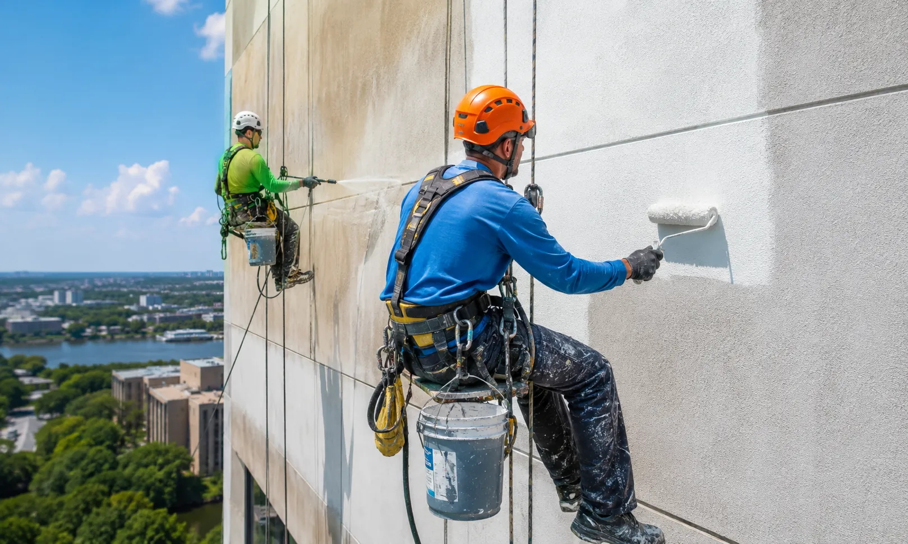
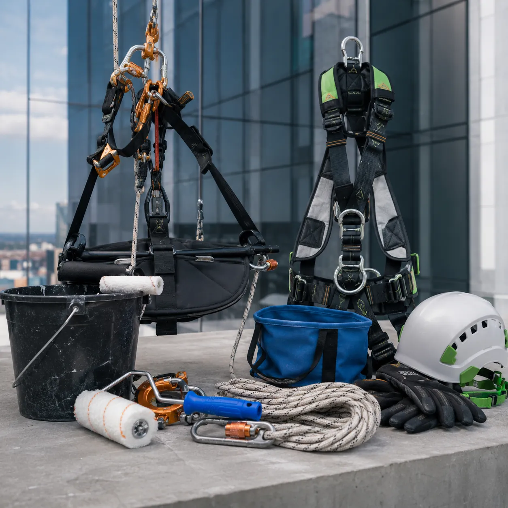
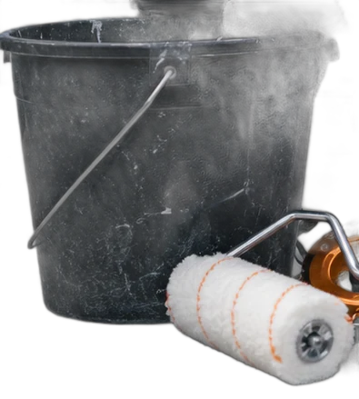
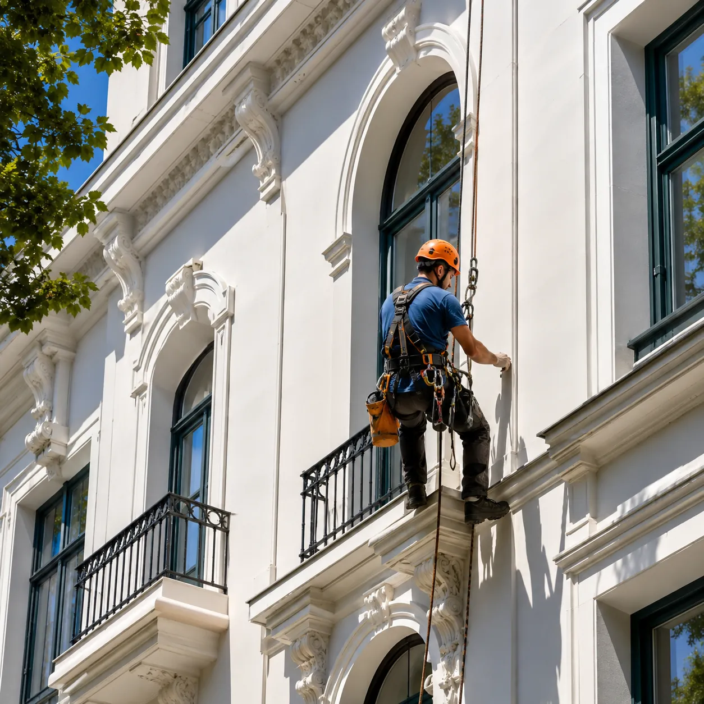
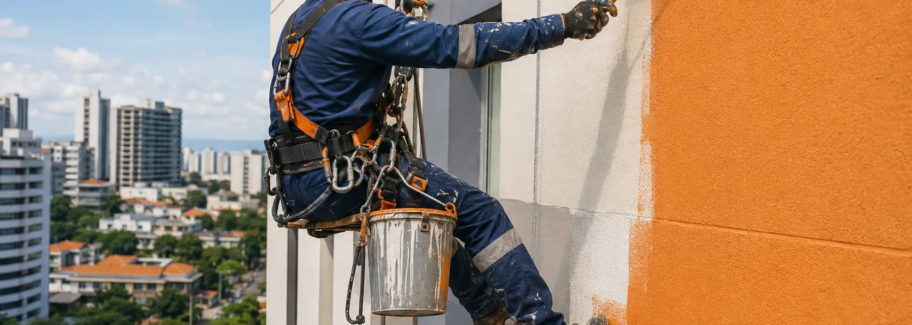
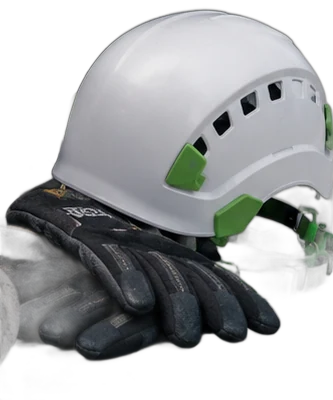

Pintura de frentes
Látex acrílico para exterior sobre frentes de PH, edificios y locales. La preparación va antes que la pintura: hidrolavado, picado de lo que suena hueco, sellado y fijador. Eso es lo que hace que dure.
Trabajos en altura con silleta · CABA y GBA
Colgamos desde la azotea con silleta y doble línea de vida: revestimiento, pintura y reparación de frentes, sin estructura en la vereda.
CABA y Gran Buenos AiresVamos a verlo antes de presupuestar.
Sin estructura en la veredaNada que armar, nada que desarmar.
Vereda liberada cada díaSe valla el sector y se libera al terminar.
01 — Servicios

Látex acrílico para exterior sobre frentes de PH, edificios y locales. La preparación va antes que la pintura: hidrolavado, picado de lo que suena hueco, sellado y fijador. Eso es lo que hace que dure.
Revestimiento plástico texturado y membrana líquida en frentes y medianeras. Frenamos la humedad donde entra, no donde se ve la mancha.
Fisuras, revoques flojos, molduras y frentines de balcón. Se pica lo que está suelto y se repone antes de dar la primera mano.
Interiores, escaleras, cocheras y unidades. Si ya estamos en el edificio por el frente, el interior entra en el mismo presupuesto.
02 — El método
Una silleta es un asiento suspendido de dos cuerdas independientes ancladas en la azotea. No se apoya en la pared ni en el piso: se cuelga, se trabaja el paño y se baja.
Antes de arrancar te pasamos la documentación del equipo y las fotos de los anclajes que vamos a usar en tu edificio.


03 — La diferencia

Seis pisos, revoque castigado por el sol y el hollín. El trabajo de pintura es el mismo en los dos casos. Lo que cambia es cómo se llega hasta la pared.
Antes de la primera mano hay que armar una estructura completa contra el frente, apoyarla en la vereda y después desarmarla. Días de obra que no pintan nada.
Dos cuerdas ancladas en la azotea y el asiento colgando. Se valla solo el sector de vereda que queda debajo, y la primera mano se da el mismo día que llegamos.
El mismo acabado, sin la obra alrededor. Cuando bajamos por última vez, en la vereda no queda nada nuestro.
Pedí tu presupuesto
El frente se hace desde arriba.
La vereda sigue siendo de los vecinos.
04 — Cómo trabajamos
Vamos, miramos el frente de cerca, medimos y te pasamos el presupuesto por escrito con el plazo incluido. La visita no tiene cargo.
Montamos los anclajes en la azotea, revisamos las dos líneas y vallamos el sector de vereda que queda debajo del paño del día.
Hidrolavado, picado del revoque flojo, sellado de fisuras y fijador. Es el 70% del trabajo y el único que nadie ve desde abajo.
Revestimiento texturado o dos manos de látex acrílico, paño por paño, siempre de arriba hacia abajo para no marcar el trabajo.
Desarmamos los anclajes, dejamos la vereda barrida y te pasamos las fotos del frente terminado piso por piso.
05 — Obras
06 — Consorcios
Nos habían presupuestado el andamio aparte del trabajo. Acá el acceso venía incluido y el frente quedó terminado en menos de dos semanas.
Lo que más valoró el consorcio fue no perder las cocheras. Vallaban el sector a la mañana y a las seis estaba todo liberado.
Vinieron por una fisura en el balcón del sexto y terminamos haciendo el frente completo. Mandaban fotos del avance todos los días.
07 — Preguntas

El acceso se hace desde la azotea del propio edificio. Coordinamos con la administración la entrada a la azotea y el vallado del sector de vereda donde vamos a estar ese día. Si el edificio necesita alguna gestión particular, te lo decimos en la visita.
Depende de los metros y del estado del revoque. Un PH de tres plantas suele llevar entre 4 y 6 días de trabajo; un edificio de ocho pisos, entre dos y tres semanas. El plazo va por escrito en el presupuesto.
No. Con lluvia la pintura no agarra y con viento fuerte el trabajo en altura deja de ser seguro. Esos días no se sube y se recupera en la jornada siguiente.
Se avisa piso por piso el día anterior, se cubren los balcones del paño que estamos haciendo y se retira todo al terminar la jornada.
Sí: palieres, escaleras, cocheras y unidades. Cuando ya estamos en el edificio por el frente, el interior entra en el mismo presupuesto.
Un anticipo al empezar y el resto contra avance de obra. La visita y el presupuesto no tienen cargo.
08 — Presupuesto
Respondé estos datos y te llega a WhatsApp ya armado. Con eso coordinamos la visita.
Decinos dónde queda y cuántas plantas tiene. Vamos a verlo, medimos y te pasamos el presupuesto por escrito, sin cargo.